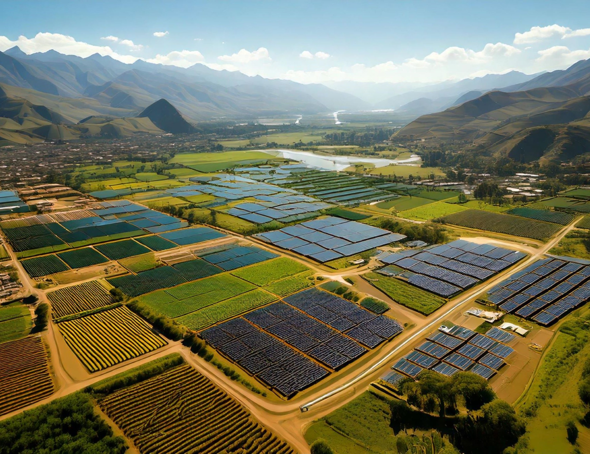

We present three normative scenarios (Nature for Nature, Nature for Society, and Nature as Culture) and one exploratory scenario (Business as Usual) of future landscape change in Peru. The normative scenarios are intended to encapsulate descriptions of collectively desired characteristics of future landscapes across different regions in the country. On the other hand, the exploratory scenario is intended to reflect a probable future landscape change based on current trends to serve as a point of comparison to the socially desirable scenarios.
Click on the columns to expand the content. You can click multiple columns to compare scenarios.
Nature for Nature
By 2060, Peru’s landscapes are treated as vital, living entities deserving of protection not merely for their utility to humans but for their inherent worth. This transformation was sparked by a societal shift in the early 21st century, towards recognizing nature’s intrinsic value as a fundamental aspect of ethical living. This vision reshaped economic, social, and environmental governance priorities, aligning them with an ethos of coexistence and respect for life in all its forms.

Characteristics
 Climate Change: RCP 2.6
Climate Change: RCP 2.6
 Population: 37.21 million
Population: 37.21 million
 Economic development: 1007 billion USD
Economic development: 1007 billion USD
 Value perspective on nature: Mainly Intrinsic
Value perspective on nature: Mainly Intrinsic
 Protected areas (proportion of Peru under protection): 30% by 2030
Protected areas (proportion of Peru under protection): 30% by 2030

Shifting Values and Lifestyles
Witnessing first-hand the continued degradation of nature and the decline of characteristic species1 due to climate change and anthropogenic activities inspires a profound shift in societal values. Nature is no longer seen as a resource to be exploited but as a partner in a shared existence. This perspective is enshrined in law, building upon the legal precedent of the recognition of the Marañón river as an entity holding intrinsic rights, including the right to exist and the right to be free of pollution2. This concept of rights for nature is propagated through education initiatives to improve widespread environmental awareness among the population.
In terms of lifestyles changes, the population adopts resource efficient behaviours to reduce the impact on nature. The share of the population living in urban areas reaches 92% by the year 2060 ((1), according to SSP1) with people opting to live in compact settlements that provide better access to services and amenities. There is also a substantial shift in diets towards more plant-based consumption to reduce pressure on ecosystems through livestock production3. The recognition of the intrinsic value of nature fosters wider societal inclusivity, which drives progress in reducing economic and social inequality, by, for example, addressing issues such as the disproportionate employment of women in the informal sector (2).
Changing economic priorities
Economic development shifts towards sustainable activities in secondary urban centres beyond Lima, promoting local, eco-friendly businesses and reducing dependence on resource-intensive industries. This transition enhancing community resilience (3) and results in increased economic formalisation which generates revenue for greater governmental spending on nature protection as this is recognised as essential for the continuation and growth of the green economy4. Overall, there is moderate economic growth, with GDP per capita reaching approximately 1007 billion USD by 2060 (converted to USD using purchasing power parity (PPP) in 2017), as projected under SSP2 (4).
The agricultural sector adopts techniques that emphasize harmony with nature such as agroforestry and agro-ecological farming (chacras agroecológicas integrales) (5,6). The organic agriculture sector expands with pesticides and synthetic fertilizers are replaced by natural alternatives, ensuring long-term productivity of the soil. However, these changes make agricultural production more extensive, requiring greater land area to meet food production demands. At the same time, the reduction in land utilised for livestock as a response to changing diets, does counteract this trend to an extent. To further reduce environmental impacts agricultural land is situated in closer proximity to urban areas to reduce length of the supply chain and hence minimize wastage.
Forestry policies are characterised by strict protection and restoration measures (7). Clearance of natural forests is heavily restricted, and production forests are required to shift towards native species over non-native high yield species. Similarly mining activities are strictly regulated, with no new concessions being granted beyond 2030, however existing operations are allowed to continue (8). However, due to stringent legal environmental requirements, only a limited portion of these concessions are exercised by the holders, minimizing the overall environmental impact. Tourism shifts towards nature-focused activities such as wildlife watching, forest and wetland walks, and marine conservation tours, actively promoting a more sustainable and respectful relationship with nature (9).
Indigenous Communities
The wellbeing of Indigenous communities is improved through the strengthening of land rights, increased political representation, and participation in conservation efforts. In this regard, the role of Indigenous communities as environmental stewards is formally recognised in the expansion of protected areas with the inclusion of indigenously managed reserves (10). However, stricter land-use regulations do occasionally create tensions where communities seek to maintain traditional agricultural or resource use practices. In addition, there are targeted policies improve access to healthcare, education, and economic opportunities (11).
Governance, Planning and Resource Management
Governance evolves to ensure transparency and effective regulation of activities impacting ecosystems, particularly the strict control of environmental pollution. The primary focus of landscape planning is minimising human impacts on nature. For example, when planning developments authorities must give equal consideration to the impacts on people and nature in accordance with the rights of both. In light of this, the 2023 modification to the Forest and Wildlife law5 is repealed and responsibility for forest zoning is returned to MINAM. Alongside this, the contracts of existing forest concessions are allowed to expire after their initial 40-year terms. Concession management is then aligned with a nature-first principle such that only operators demonstrating robust ecological stewardship have their concession contracts renewed. Non-renewed concession areas remain under state management and support sustainable activities like low-impact nature-focused tourism or community-led agroforestry.
Urban areas throughout Peru are better planned for sustainability, with a trend towards overall densification whilst maintaining integrated green spaces. This ensures that there is less arbitrary sealing of natural surfaces (soil) in urban areas (12). The development of transport and communications infrastructure is mindful of the need to minimise ecological impact, with strategic road expansions that avoid sensitive areas to protect natural habitats and biodiversity. Better enforcement of the law prohibits illegal road construction in ecologically valuable areas (13).
In terms of water resources, the hydrographic network is carefully managed to ensure water courses follow natural dynamics. Initiatives aimed at using water more efficiently help to conserve the water needed for natural ecosystems to thrive (14), while governance frameworks enforce strict water conservation measures, preventing over-extraction and pollution of rivers, lakes, and aquifers. Water infrastructure development focuses on nature-based solutions, such as wetland restoration and watershed protection, to enhance water retention and quality (15). Strengthened regulatory oversight reduces illegal water diversion, while community-led water stewardship initiatives empower local actors to participate in sustainable resource management.
Ecological Restoration and Protection
In line with the notion of the need for areas for nature to thrive free from human impacts, there is a strong push to expand conservation areas to cover 30% of the national territory by 2030 with existing conservation areas and their management still persisting. Sites for new conservation areas are chosen on the basis of their value for preserving biodiversity whilst balancing the inclusion of Peru’s diverse eco-regions. These areas typically lie further from settlements to mitigate human-wildlife conflicts. Therefore, they are often designated as government-managed strict protected areas (e.g. National Parks) where human activities inside core areas are strictly managed according to the IUCN category Ia or Ib6. However, a proportion of the new conservation areas are also established as indigenous-led biodiversity reserves with defined core and sustainable use areas. Environmental research within conservation areas is directed towards understanding how to maintain and restore biodiversity. In the wider landscape there are large-scale environmental restoration programs with the goal of restoring degraded areas to functioning natural habitats. Additionally, a large effort is made to limit the introduction of non-native species to safeguard endemic biodiversity (16).
Nature as Culture
Peru’s landscape in 2060 embodies a commitment to sustainability, cultural preservation, and social equity achieved through community-driven approaches. The principles of ‘Buen Vivir’ guide both economic activities and environmental governance, ensuring that nature and communities thrive in harmony. The country’s diverse eco-regions and characteristic landscapes are not only preserved but celebrated as integral components of national identity.
Characteristics
Climate Change: RCP 2.6
Population: 37.21 million
Economic development: 812 billion USD
Value perspective on nature: Mainly Relational
Protected areas (proportion of Peru under protection): 30% by 2030

Shifting in Values and Lifestyles
In response to the cultural homogenisation and disconnection from nature resulting from trends of neoliberal globalisation, the philosophy of Buen vivir gains mainstream appeal within Peruvian society(17–19). The central tenets of Buen vivir being a focus on wellbeing, sufficiency, collectivism and the harmonious relationship between people and nature (20). This prompts a revived societal recognition of the cultural and spiritual importance of Peru’s landscapes, driving broader economic and political change in the management of the environment and natural resources.
Following the desire of the population to dwell closer to nature the increase in the proportion of the population living in urban areas is relatively small increasing from 78% to 81.5% by 2060 ((21), according to SSP3), resulting in a greater area of lower density settlements. At the same time in line with the spirit of self-sufficiency, individuals make efforts to reduce their consumption and generally live more sustainable lifestyles.
Changing economic priorities
The current prevailing conception of economic development is redefined in accordance with the principles of Buen Vivir, resulting in a paradigm shift towards sustainable activities, particularly those incorporating traditional and indigenous knowledge, being prioritized over the maximisation of production. This results in GDP per capita, increasing to 812 billion USD by 2060 (converted to USD using purchasing power parity (PPP) in 2017), as projected under SSP3 (4).
In terms of agriculture, holistic agro-ecological techniques such as agroforestry become widespread and the cultivation of botanical and medicinal plants endemic to Peru is actively promoted, fostering both biodiversity and traditional knowledge preservation. This is achieved through actions such as the continued development of regional strategic, and action, plans on Biotrade, leading to the expansion of the national markets for these goods7. In addition, producer organizations play a key role in supporting local farmers and ensuring fair market access. As a result of these trends, there is a moderate expansion of the total area utilized for agriculture. Albeit with the intensity of agricultural activities remaining fairly low, reflecting a strong commitment to cultural values and ecological stewardship. Similarly, the sustainable artisanal fishing sector is promoted and safeguarded, supporting coastal communities.
Extractive activities such as mining activities, are allowed to continue, however they are now strictly regulated to minimize their ecological footprint. New concessions can be granted, but strict legal requirements keep the actual exploitation of these sites relatively low. Tourism shifts towards nature-based activities that connect visitors with Peruvian culture, such as farmer cooperative visits and traditional craft workshops. This not only supports local economies but reinforces the appreciation of landscapes and traditions. These changes in the economy result in a greater formalising of economic activities, with the subsequent tax revenues re-invested in improving local economies.
Indigenous Communities
Indigenous communities experience strengthened autonomy and cultural resurgence, guided by the principles of Buen Vivir. Traditional ecological knowledge is integrated into governance and economic activities, ensuring sustainable land use and biodiversity conservation. Land tenure security is reinforced through an increase in the granting of outstanding applications for Indigenous land titles until 2060. These titled area are designated as Other effective area-based conservation measures (OECMs) with management responsibility devolved to communities. Community-led water management systems, inspired by ancestral techniques, enhance resilience to climate change (22).
Governance, Planning and Resource Management
In the political sphere, the governance of land and natural resources is strengthened through greater devolution of responsibilities to departmental authorities. In addition, there is greater citizen participation in decision-making using multi-stakeholder forums at the national and regional scales, building upon existing successes8, as well as incorporating digital innovations (CivicTech)9. These processes lead to increased transparency of environmental regulations promoting accountability and public trust in the state. The overarching orientation of landscape management is to prioritize equitable access to, and use of, land to ensure the material needs of the population are met whilst minimising environmental degradation. This is achieved through effective implementation of the ecological and economic zoning plans as well as the strict control of environmental pollution. The 2023 modification to the Forest and Wildlife law10 is repealed and responsibility for forest zoning is returned to MINAM. The design of policies is supported by an expanded environmental research agenda that seeks to integrate traditional ecological knowledge to foster holistic solutions for sustainability (23).
Rural, and particularly indigenous communities, benefit from secure land tenure through formal titling, empowering them to actively participate in sustainable land management practices (24). Whereas urban areas are better planned to integrate green spaces and energy-efficient technologies. The steady implementation of infrastructure projects across the country, particularly communications infrastructure, has significantly reduced socio-economic inequality improving access to education, healthcare, and other basic services (25). The transport network specifically is developed to help supporting nature-based tourism without disturbing the integrity of the landscape.
The management of water resources sees remarkable improvements through devolved community-led systems utilising ancient water technologies (26,27). Semi-natural reservoirs and channels are revitalized, securing water availability and bio-remediation methods lead to improved water quality across urban and rural areas.
Ecological Restoration and Protection
Peru achieves its obligations with regard to the KM-GBF target11 to expand the coverage of protected areas and Other Effective area-based Conservation Measures (OECMs)12 to 30% of the countries territory by 2030. New OECMs are selected to specifically preserve landscapes characteristic of Peru, with a focus on balancing the representation of diverse eco-regions and sites of cultural heritage. To foster local stewardship, these OECMs are often designated on Indigenous community lands, where management is devolved to communities13.
Within national protected areas , management focuses on reversing biodiversity loss, especially the protection of culturally significant species, as well as the mitigation of human and wildlife conflict. In tandem with the establishment of new conservation areas, large-scale environmental restoration projects have successfully revived degraded lands, enabling traditional practices such as the harvesting of non-timber forest products to flourish once again.
Nature for Society
The landscape of Peru in 2060 has been optimised to maintain the provision of key ecosystem services for society (28). This is achieved through strong cross-sectoral planning and a sustainability transformation driven by the adoption of green technologies and the mainstreaming of the economic valorisation of ecosystem services and biodiversity.

Characteristics
Climate Change: RCP 2.6
Population: 37.21 million
Economic development: 1192 billion USD
Value perspective on nature: Mainly Instrumental
Protected areas (proportion of Peru under protection): 30% by 2030

Shifting Values and Lifestyles
The societal shift that enables the transformation of the landscape is rising GDP levels, leading to increased environmental awareness (29). Improved economic conditions allow communities to invest more in sustainable practices and environmental education. This reinforces the recognition of nature’s critical role in supplying vital ecosystem services, fostering a broader sense of environmental stewardship in the population. Through this impetus, the concept of ecosystem services is integrated in the economy, governance and planning (30).
In terms of lifestyle changes, there is a limited reduction in levels of personal consumption, for example reduced meat consumption, however prevailing ideas around what constitutes a high standard of living remain and the prevalence of resource efficiency improving technologies means that this is not a strong focus. Accordingly, economic growth is high, with GDP per capita reaching approximately 1192 billion USD by 2060 (converted to USD using purchasing power parity (PPP) in 2017) (4). Per capita living space is relatively large, and the trend of rural-urban migration continues such that ~92% of the population live in Urban areas by the year 2060 ((21): aligned with SSP1). Both of these factors that the contribute to a high level of total expansion in land utilized for human habitation.
Changing economic priorities
The economy transitions towards greater sustainability and diversification as the reliance on extractive industries is reduced and service-based sectors expand. One example of this is the expansion of the Payments for Ecosystem Services (PES or MERESE) sector. Learning the lessons from the implementation of PES schemes in water management, there is an expansion of schemes to conserve agrobiodiversity, as well the implementation of a high-integrity carbon market1415.
The growth of the service-sector is decentralized, with large cities other than Lima, becoming more pronounced regional economic hubs16. This perpetuates the existing trend of rural-urban migration although disparities between Lima and other regional hubs are reduced. The development of the service sector leads to increasing formalisation of economic activities with some tax revenues directed to improving the capacity of institutions to engage in proactive environmental planning (31).
Across all of the primary economic sectors there is an attempt to balance the goal of increased production whilst simultaneously improving sustainability (32). The principle means of achieving this is through strong regulatory frameworks and ‘green’ technological solutions to improve efficiency, including the uptake of circular economic principles17.
For example, in agriculture, digital technologies, such as automation, remote sensing and artificial intelligence driven data analysis are used optimize production18. The development of these technologies is fast-tracked through the creation of ecological industrial parks19 with the knowledge disseminated to farmers by existing producer cooperatives, who receive state support to provide training. These measures are also employed to reduce in food wastage across the production and supply chain (33). The use of composted biowaste from cities for fertilizer is a prime example of a successful circular economic measure. Similar efficiency gains are observed in livestock farming, however there is a reduction in overall production. This is partly due to a shift in the general population towards more plant-based diets but also the expansion of environmentally certified aquaculture (34) as an efficient means to produce dietary protein. A small artisanal fishing sector persists but this is not promoted above more efficient industrial fishing, which itself is subject to stricter quotas and technological advances to improve sustainability. By applying modern techniques and optimising resources, moderate intensification is achieved, meaning that agricultural and livestock production require less overall land whilst delivering improved food security.
In the mining sector the concept of Extended Producer Responsibility (EPR) is brought into law20. This makes companies responsible for the environmental impacts of their activities across their entire life cycle including the disposal and recovery of products and waste. This creates the incentive to introduce more circular practices such as the valorisation of mining waste, for example for use within the construction sector, as well eliminating the use of toxic chemicals such as cyanide. Additional mining concessions are granted, though these are limited to areas with comparatively lower values for ecosystem services and biodiversity. At the same time regulatory requirements remain flexible enough to sustain the viability of these operations, resulting in a steady rate of new site development.
In the forestry sector, the 2023 modification to the Forest and Wildlife law21 is repealed and responsibility for forest zoning is returned to MINAM. Forest concessions are supported to achieve certification under the Forest Stewardship Council (FSC) standards, ensuring sustainable environmental and social practices22. The expansion of carbon markets means that some concessions transition from logging to REDD+ projects23. The tourism sector remains largely focused on nature-based activities, such as wellness retreats and eco-friendly adventure sports, albeit with additional regulations ensuring that a proportion of revenue is used for environmental conservation.
Indigenous Communities
Indigenous communities are recognised as key actors in conservation, with community-driven conservation initiatives, underpinned by Indigenous knowledge, playing a central role in maintaining ecosystem services and addressing land-use conflicts (35). While the role of Indigenous communities in decision-making processes is strengthened, challenges remain in ensuring full inclusion, as external actors continue to influence key decisions. Land tenure security is enhanced, and benefit-sharing mechanisms are more widely implemented, although inconsistencies still exist, leading to regional disparities (10). Some land rights disputes continue to persist, necessitating ongoing dialogue to balance Indigenous autonomy with broader environmental and economic goals.
Governance, Planning and Resource Management
The systems of governance surrounding land and natural resources are made more robust, with effective monitoring and enforcement ensuring sustainable practices across sectors. This is guided by an environmental research agenda focusing on identifying solutions to optimize the provision of ecosystem services (36). This along with increased transparency of environmental regulations improves public trust. To ensure efficient and coherent planning, governance continues to be conducted in a largely top-down fashion, but with some decisions devolved to regional experts.
The overarching goal of landscape planning is to maximise the efficiency of land use by clustering similar activities together (residential areas, agriculture, etc.) and encouraging the multi-functional use of land (for example, renewable energy infrastructure integrated within agricultural areas). In line with this the provision of ecosystem services is directly considered within planning and incorporated within the Ecological and Economic Zoning plans which gain more prominence given the trend of regionalized economic development (37). In urban areas, Nature Based Solutions such as rain gardens and green roofs are used to limit the impact of flooding and heat exposure while simultaneously improving mental health by reinforcing the societal connection with nature24.
Improvements to infrastructure further bridge socio-economic divides by increasing access to basic services (25). Roads and public transport systems are upgraded with a focus of promoting greener, more efficient modes of transportation, such as electric vehicles, to minimise environmental impacts25. Energy demand is increasingly met with renewable energy due to an expansion of renewable energy infrastructure. The management of water resources is improved with availability managed with a strong regulatory system, the expansion of existing tariff-based PES schemes, and technological innovations to improve efficiency of usage (38). Water quality is also enhanced through the implementation of modern bio-remediation methods26.
Ecological Restoration and Protection
As part of the effort to mitigate the impacts of climate change, large-scale environmental restoration projects are initiated to rehabilitate degraded areas, with a particular focus on soil restoration. In addition to boosting carbon sequestration and reducing local populations’ exposure to natural hazards, these projects create semi-natural habitats that support a variety of species, which in turn help maintain key ecosystem services and strengthen resilience. In accordance with the KM-GBF target27, the areal coverage of protected areas is expanded to 30% by the year 2030. New conservations areas are selected to prioritise the provision of key ecosystem services such as water maintenance and carbon sequestration, as well as their potential to improve the connectivity of the national conservation estate (39). These new conservation areas are managed according to IUCN category VI28, but may have different levels of management, such as national, regional, or private conservation areas, depending on the scale of the ecosystem services in question. This flexibility ensures that local communities can directly manage areas where benefits are largely local, while regions of broader territorial importance remain under the responsibility of regional or national authorities. Existing conservation areas retain their current governance and management arrangements.
Business as Usual
The landscape of Peru in 2060 is emblematic of the drive for economic development at the expense of improving environmental sustainability. Agriculture and extractive activities have expanded to dominate large parts of the country exacerbating undesirable land use trends of deforestation and urban sprawl. The impacts of climatic change in terms of water and food security drive migration of the population from the mountainous regions to the coastal and amazonian areas.

Characteristics
Climate Change: RCP 4.5
Population: 39.81 million by 2060
Economic development: 1007 billion USD
Value perspective on nature: Instrumental
Protected areas (proportion of Peru under protection): 25% by 2030

Shifting Values and Lifestyles
As a result of the COVID-19 pandemic and political instability in the late 2010’s Peru continues to prioritise economic development over addressing climate change and environmental degradation. Nature continues to be primarily viewed as a resource for economic growth, with little regard for its intrinsic value or its role in providing regulating and supporting ecosystem services necessary for maintaining quality of life (40).
While economic development has helped to alleviate some social and economic inequalities, conservative social policies still leave significant gaps in access to basic services and education. By 2060 GDP per capita reaches approximately 1007 billion USD (following SSP2, unit converted to USD using purchasing power parity (PPP) in 2017; (4)), reflecting robust yet uneven economic progress. Consequently, environmental awareness and responsibility is still of limited concern for the majority of the population. Due to improvements in standards of living, the population continues to grow at a moderate rate reaching 39.81 million by 2060. This combined with a relatively high per capita living space and a moderate rate of rural to urban migration (86.88% of population living in urban areas by 2060), means that the total area of land utilized for human settlements expands considerably. Given that sustainability is not a strong focus and food security has been improved for the majority of the population, there is no large-scale shift in personal consumption habits, leading to an increase in average per capita meat consumption. In addition, unsustainable modes of private transport continue to dominate.
Changing economic priorities
Economic development continues according to the current model of extractivism, maintaining reliance on resource and emission intensive activities (41). However, increasing political stability throughout the 2030s leads to greater foreign investment. This allows companies to steadily expand their international production networks, refining supply chains, diversifying operations, and tapping into global resources. This incremental growth leverages established trade agreements and gradual policy improvements to enhance efficiency and profitability, maintaining competitiveness without dramatic shifts from current practices29. These developments reduce the extent of the informal economy although Lima-Callao continues to be the only national metropolis and centre of service-based economic activities.
Across the primary sectors, there is moderate adoption of new technologies, although these are focused on improving production and not necessarily sustainability (42). This process occurs asymmetrically, with larger businesses displaying much more success in technological adoption whereas small and medium sized enterprises are limited by a lack of capacity.
In agriculture, the broad transition from subsistence to commercial farming continues driven by demand for the export market. This results in an increase in agricultural intensification and the cultivation of non-native crops such as strawberries, asparagus and blueberries. There is also a greater amount of land utilised for livestock production to sustain the demand for meat products. As a result, the area of land utilized for agriculture expands significantly, coupled with a higher degree of intensification. This is accompanied by a shift from artisanal to industrial fishing and the expansion of aquaculture.
Rising international mineral prices, particularly for copper, drive continued expansion of mining activities. This results in the allocation of additional mining concessions, with minimal attention to sustainability improvements in the sector. Weak enforcement of regulations, coupled with lax environmental legislation, leads to high rates of concession exploitation, while small-scale illegal mining remains persistent. The current carbon-intensive model of mass tourism is maintained (43). It prioritises conventional attractions, contributing to over-tourism in certain areas without significant efforts to reduce environmental impact.
Indigenous Communities
Despite formal land tenure rights in some regions, weak enforcement leaves Indigenous communities vulnerable to land grabbing and resource exploitation. Social inequalities persist, limiting access to basic services and economic opportunities. While the importance of Indigenous knowledge is acknowledged in some policy frameworks, it remains marginalised in decision-making, reducing its influence on conservation and development (44). A lack of political will to strengthen land rights and governance structures further excludes Indigenous communities from shaping policies that impact their territories and livelihoods (10).
Governance, Planning and Resource Management
Weak institutional coordination across governance levels and sectors continues to hinder the development of cohesive policies (45). Public participation is limited to token consultations, and decision-making processes lack transparency (46). Despite this, the trend of political stability does marginally improve public trust in the state.
Overall Land use planning is improved, with every department completing Ecological and Economic Zoning plans (37). However, planning remains largely reactive and subject to capture by economic actors, meaning that developments are sometimes allowed to proceed in ecologically sensitive areas in contradiction of the zoning plans. This is especially true of urban expansion, which still occurs informally due to migration to areas of increasing economic activity and because of climatic change induced impacts.
The 2023 modification to the forest law is not repealed and forestry policy remains focused on short-term economic gains30. Existing forest concessions prioritize timber production although there is an increase in the number and scale of forest-based carbon credit projects which contribute towards reducing deforestation (47). However, because of the overall orientation of the sector alongside weak enforcement of regulations, the conversion of forest to agricultural land by small scale farmers is allowed to persist. This in addition to the granting of mining concessions on forested lands leads to a trend of continued forest cover loss and degradation until 2060.
Transport infrastructure development focuses primarily on road improvement, enhancing connections and the quality of road networks without significant attention to minimizing ecological impacts. There is a particular expansion of export-related infrastructure (e.g. ports and processing facilities for agricultural and mining products) in key production sites such as the northern and southern coastal regions31. Communications infrastructure is improved however access to digital services remains uneven (25). To adapt to the increasing intensity and severity of natural disasters there is a strong focus on developing more resilient infrastructure32, although is achieved via improvements to engineering rather than the incorporation of Nature-Based Solutions.
Inadequate planning and management of water resources alongside global high intensity climate change (RCP 4.5 / RCP 6.0) exacerbate problems of water insecurity. Disruption to water availability and quality in mountainous regions driven by substantial further decline of glacial areas forces migration of the population to the coast. Given the increased demand for water for the agricultural sector there is a need to implement expensive technological solutions such as water desalination plants.
Ecological Restoration and Protection
Due to a lack of political and social support there is no expansion of conservation areas beyond the existing coverage of 17.88% and hence Peru does not achieve its international commitment to protect 30% of the national territory by 2030. Programs to mitigate the trend of biodiversity loss are hindered by competing sectoral priorities and insufficient integration of long-term sustainability goals. Environmental restoration efforts are minimal and primarily driven by regulatory compliance. Degraded areas are often repurposed for monoculture plantations or urban expansion, exacerbating habitat loss and ecosystem degradation (48).
References
https://cgspace.cgiar.org/server/api/core/bitstreams/99094d14-e0b8-4c76-9c88-2dcd6cef2442/content↩︎
https://idehpucp.pucp.edu.pe/boletin-eventos/derechos-humanos-obligaciones-internacionales-y-deforestacion-de-la-amazonia-analisis-de-las-modificaciones-en-la-ley-forestal-y-de-fauna-silvestre-desde-el-derecho-internacional-29070/#_ftn13↩︎
https://iucn.org/news/202409/oecms-collaborative-agenda-2025-2030-towards-achieving-target-3-global-biodiversity↩︎
https://cgspace.cgiar.org/server/api/core/bitstreams/99094d14-e0b8-4c76-9c88-2dcd6cef2442/content↩︎
https://idehpucp.pucp.edu.pe/boletin-eventos/derechos-humanos-obligaciones-internacionales-y-deforestacion-de-la-amazonia-analisis-de-las-modificaciones-en-la-ley-forestal-y-de-fauna-silvestre-desde-el-derecho-internacional-29070/#_ftn13↩︎
https://iucn.org/news/202409/oecms-collaborative-agenda-2025-2030-towards-achieving-target-3-global-biodiversity↩︎
https://es.wikipedia.org/wiki/Categor%C3%ADas_de_%C3%A1reas_protegidas_de_la_UICN↩︎
https://www.gob.pe/institucion/minam/noticias/1058841-cop-29-peru-impulsa-mercados-de-carbono-que-aseguren-la-conservacion-ambiental-y-el-desarrollo-sostenible↩︎
https://vcmintegrity.org/wp-content/uploads/2021/05/VCMI-Consultation-Report_Espanol-1.pdf↩︎
https://observatorio.ceplan.gob.pe/ficha/o22_2024↩︎
https://capacity4dev.europa.eu/library/perus-path-towards-circular-economy_en?refpage=search#:~:text=Peru%20has%20made%20significant%20efforts,the%20competitiveness%20of%20productive%20sectors.↩︎
https://observatorio.ceplan.gob.pe/ficha/o45_2024↩︎
https://observatorio.ceplan.gob.pe/ficha/o19_2024↩︎
https://www.cepal.org/es/publicaciones/47895-la-economia-circular-la-mineria-peruana↩︎
https://forestpolicy.org/risk-tool/country/peru#:~:text=In%20late%202023%2C%20the%20Peruvian,reconsideration%20from%20some%20Congress%20members.↩︎
https://fsc.org/en/fsc-standards↩︎
https://unfccc.int/topics/land-use/workstreams/redd/what-is-redd↩︎
https://www.wwf.org.pe/?373791/Soluciones-basadas-en-la-naturaleza-la-respuesta-a-muchos-de-los-desafios-globales↩︎
https://observatorio.ceplan.gob.pe/ficha/o4_2024↩︎
https://observatorio.ceplan.gob.pe/ficha/o5_2024↩︎
https://es.wikipedia.org/wiki/Categor%C3%ADas_de_%C3%A1reas_protegidas_de_la_UICN↩︎
https://forestpolicy.org/risk-tool/country/peru#:~:text=In%20late%202023%2C%20the%20Peruvian,reconsideration%20from%20some%20Congress%20members↩︎
https://observatorio.ceplan.gob.pe/ficha/o17_2024↩︎
https://observatorio.ceplan.gob.pe/ficha/o6_2024↩︎